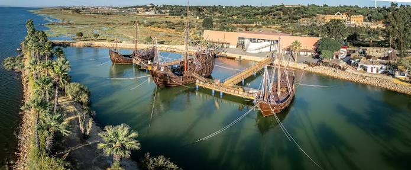
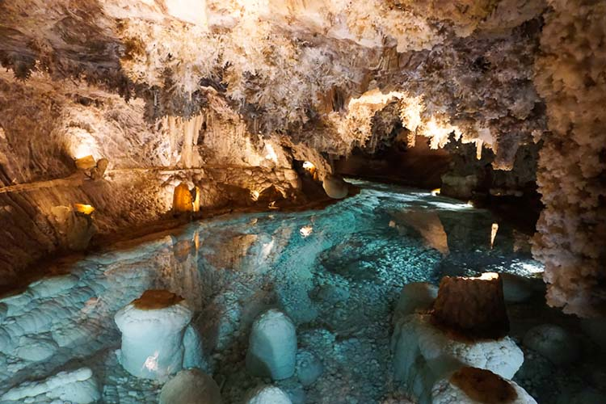
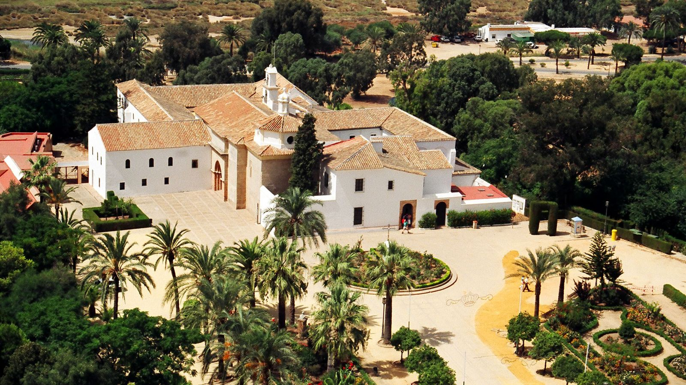
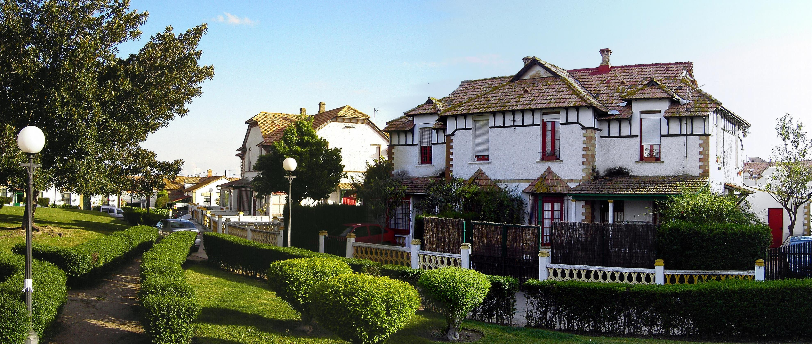

Must-See Places in Huelva
From the legacy of the Discovery of America to the depths of the Sierra de Aracena.

Wharf of the Caravels
Open-air museum housing life-size replicas of the Niña, the Pinta, and the Santa María built for the 5th Centenary.

Cave of Wonders (Gruta de las Maravillas)
One of the most spectacular show caves in Spain, featuring underground lakes and stunning stalactite and stalagmite formations.

Sierra de Huelva
Chestnut and cork oak forests, charming whitewashed villages like Alájar and Linares de la Sierra, and the cradle of Iberian ham.

Rio Tinto Pier
Former iron and copper ore loading dock built in 1876 by the British company Rio Tinto Company Limited.

Monastery of La Rábida
Gothic-Mudéjar Franciscan monastery where Christopher Columbus prepared his voyage to America alongside the friars.

Reina Victoria Neighborhood
Popularly known as the Workers' Quarter (Barrio Obrero), noted for its Victorian English architecture built for mine employees.